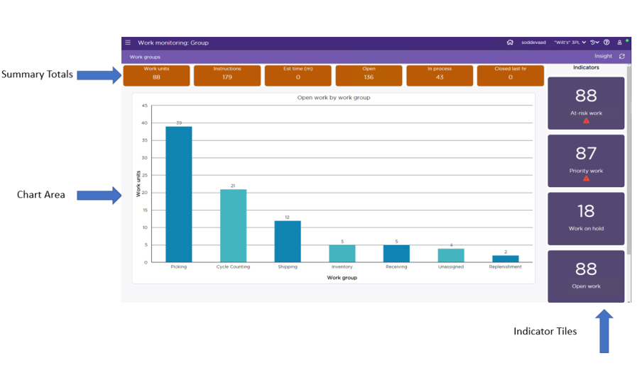
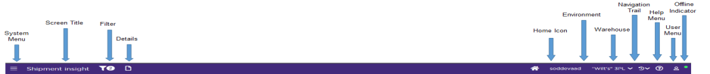
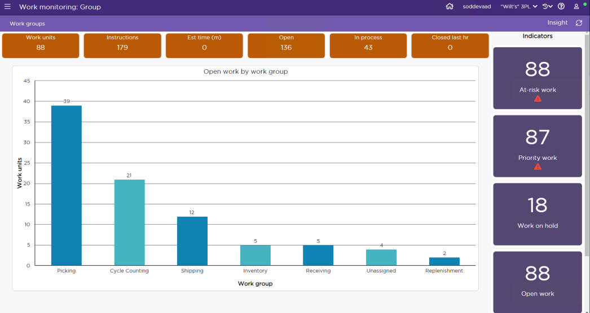
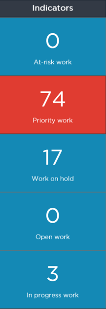
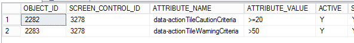

Introduction to Monitoring Screens
You can use monitoring screens to research data records via a series of column charts. These screens are not only viewable from the SCALE Desktop, but are also optimized for mobile viewing on a device such as a tablet. This topic describes the basic structure and function of monitoring screens. If you need more specific information about a certain monitoring screen, please see one of the related topics linked below.
Related Topics...
Using the Work Monitoring: Customer Screen
Using the Work Monitoring: Group Screen
The following is discussed in this topic:
- Basic Screen Structure
- Using the Navigation Bar
- Drilling-Down Through Data on the Charts
- Jumping to an Insight Screen
- Summary Totals
- Indicator Tiles
Basic Screen Structure
Each monitoring screen includes five primary components (as seen in the picture below): the Navigation Bar, the Breadcrumb Bar, the Summary Totals, the Chart Area, and the Indicator Tiles.

Using the Navigation Bar
A monitoring screen’s Navigation Bar (located on the top of the screen) provides you access to several important features.
The graphic below outlines the structure of the Navigation Bar:

System Menu
- This menu contains links to all of the monitoring/insight screens.
- When you select a different monitoring screen, you can choose to have the system display it in the current browser tab, in a new browser tab, or in a new browser window (by right-clicking on the link; or on a tablet, press-and-hold the link until a menu pops up).
- This menu displays all independent Insight screens grouped by their respective functional areas. The screens are segregated into different functional areas like Receiving, Order planning, Shipping, and so on. You can further click on them to find the corresponding list of Insight screens.

Screen Title
- This represents the name of the current monitoring screen.
Home Icon
- You can use this icon to return to your configured home page within the application. Any prior filter or data on the configured home page will not remain set.
- If you have not configured any home page, clicking on this navigates you to the Warehouse Dashboard Screen.
- You can set different home pages for each browser/device/environment.
Environment
- This represents the name of the environment that you are currently signed into. When signing on for the first time, the environment is set to one of the environments for which you have authorized access.
Warehouse
- This represents your user's assigned warehouse from the current session. You can change the warehouse by selecting a new value from the drop-down menu.
Navigation Trail
- This shows up to the previous 10 screens that the user has accessed within this browser tab, with the most recent starting at the top.
NOTE: If you use Cancel option to leave a screen, that screen is not added to the navigation trail.
- This is unique per browser tab. If a screen is opened in a new tab, the navigation trail will start freshly in the new tab while the previous tab will maintain its trail.
- Clicking or tapping on an entry will take the user back to that screen in its last “saved” state.
- Screens shown in modal dialogs are ignored.
Help Menu
- This menu contains links to the SCALE online help, with which you can access the complete help system, or a topic specific to the monitoring screen you are currently viewing.
- If you select the "toggle resource keys" option, the system will display the resource key ID's of text labels that the current monitoring screen is using. If you then select this option again, the system will hide the resource key ID's and display the text labels. Note that if the resource keys are toggled on and you navigate to a different monitoring screen, the system will open that new screen with the resource keys displayed as well.
User Menu
If you click on the user menu, then your SCALE user name will be displayed in the dropdown menu along with the following options:
- Restore Default Settings: The "restore default settings" option will allow you to change back to the shipped default the following insight screen display settings: column grouping, column preferences (sequence, visibility, width), column sorting, mini-grid, and hierarchical mini-grid. Note that the system will prompt you to confirm this action before actually restoring these settings. While opening each insight screen, after performing a "restore default settings",
- All displayed columns show their entire column headings and data in them without data being truncated
- All displayed columns shrink to fit the data being displayed without truncating the data or the column heading.
- Set As Home Page: Clicking on 'Set as home page' option sets the current page as your home page for that browser/device/environment. This is allowed on insight screens, transaction screens (not shown in a modal window), and monitor screens.
- Upon first sign in to the system without establishing a home page, the Warehouse Dashboard screen appears. After setting a home page, signing out and signing back in with the same user ID using this same device and browser takes you to the established home page. No filters are set when the screen appears.
- After setting a home page on one browser but not another, signing in with the same user ID using a different browser takes you to the Warehouse Dashboard screen.
- After setting a home page on one device but not another, signing in with the same user ID using a different device takes you to the Warehouse Dashboard screen.
- Having different home pages for different browsers/devices, signing on with the same user ID takes you to the home page you have configured for that respective browser/device.
- When signing on to a different environment on a device/browser where the home page was established, you can establish a different home page for that environment.
- Sign Out: The "sign out" option allows you to log out of the current insight screen session.
NOTE: The user menu can show a generic image or your customized image saved at \\<server name>\ILS\Web\_custom\images with the file name <username>.png,
Offline Indicator
- This graphical indicator tells the user if the server is online (green) or offline (red).
Drilling-Down Through Data on the Charts
- The column charts that are displayed on monitoring screens represent data retrieved from SCALE database table(s).
- The data columns represented on the chart are sorted with the highest value column appearing first.
- Each chart allows you to drill-down into the data to display a subset of the data column that you selected. For example, on the Work Monitoring: Group chart, you can drill down from the top level of work group though to the sub-levels work type and assigned user.
- You can perform this drill-down action either clicking the mouse cursor or using your finger to tap on a chart column.
- When you drill-down to a lower level in a chart, the system will add a breadcrumb to the breadcrumb bar, which indicates the chart level and what value column you selected. When you drill down further in the chart, the system will make the previous chart level's breadcrumb a link, which allows you to return to a previous chart level.
- When you press the refresh button (located on the right side of the breadcrumb bar), the system will refresh the chart's data.
Jumping to an Insight Screen
- When you click/tap on a column on the last chart level on a monitoring screen, the system will open the related insight screen, already loaded with the records that result from the criteria that you clicked/tapped on the various chart levels. Note that the insight screen will open in a separate browser window.
- Also, you can "jump" to an insight screen from any level of a chart by pressing the "Insight" button (located on the right side of the Breadcrumb Bar).
Summary Totals
- Each monitoring screen includes a series of summary totals that reside directly above the chart.
- These summary totals relate to the data that is being represented by the chart columns.
- When you drill-down to a lower-level chart, the system updates these summary totals to reflect the data bring displayed.
- Note that these summary totals are configurable in the metadata, so you can change them to better meet your warehouse's needs.
- When you press the refresh button (located on the right side of the breadcrumb bar), the system will refresh the summary total values.
Indicator Tiles
- Each monitoring screen includes a number of interactive "Indicator" tiles, which display important data points related to various warehouse processes.
- The indicator tiles are NOT related to the data being represented on the chart. When you drill-down the various levels of the chart, the data values represented by the indicator tiles are not changed in accordance to the new chart level.
- An indicator tile will change to have a yellow background color when its value meets the configured "caution" criteria. This level is defined in the screen control attributes table.
- An indicator tile will change to have a red background color when its value meets the configured "warning" criteria. This level is defined in the screen control attributes table.
- The data values tracked by the indicator tiles are configurable in the metadata, so you can change them to better meet your warehouse's needs.
- When you press the refresh button (located on the right side of the breadcrumb bar), the system will refresh the indicator tile values.
The following Indicator Tile queries are shipped with the system:
- At-risk Work: This tile’s query is defined as the work’s “aging date” being greater than one day.
- Priority Work: This tile’s query is defined as the work’s “priority” being less than or equal to 10.
- Work on hold: This tile’s query is defined as displaying all work that has a hold code assigned.
- Unassigned Work: This tile’s query is defined as the work’s “condition” being open or in process, and a user is not assigned to the work.
- In Progress Work: This tile’s query is defined as the work’s “condition” being in process, and having a user assigned.
Critical Level Configuration on Indicator Tile Data
You can define “caution” and “warning” criteria for each of the indicator tiles, which will cause them to change to a different color when a certain data level has been met.

- When the value in an indicator tile value meets the defined caution criteria (but not yet the warning criteria), the tile’s color changes to yellow.
- When the value in an indicator tile value meets the defined warning criteria, the tile’s color changes to red.
- When defining this criteria in the SCREEN_CONTROL_ATTRIBUTES table, any numerical comparison can be used: >, <, =, <>, >=, <=. Note that you cannot use “AND” or “OR” queries.
- If the criteria is defined as an invalid numerical comparison, the system will ignore this and the tile will remain the default color (gray).
NOTE: If the caution / warning criteria are defined as the same value, the tile will turn red to indicate the warning condition when the value meets the criteria level.
Below are the criteria values for the Work Monitoring: Group screen’s “Work On Hold” tile, as defined in the SCREEN_CONTROL_ATTRIBUTES database table:
